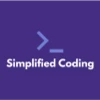
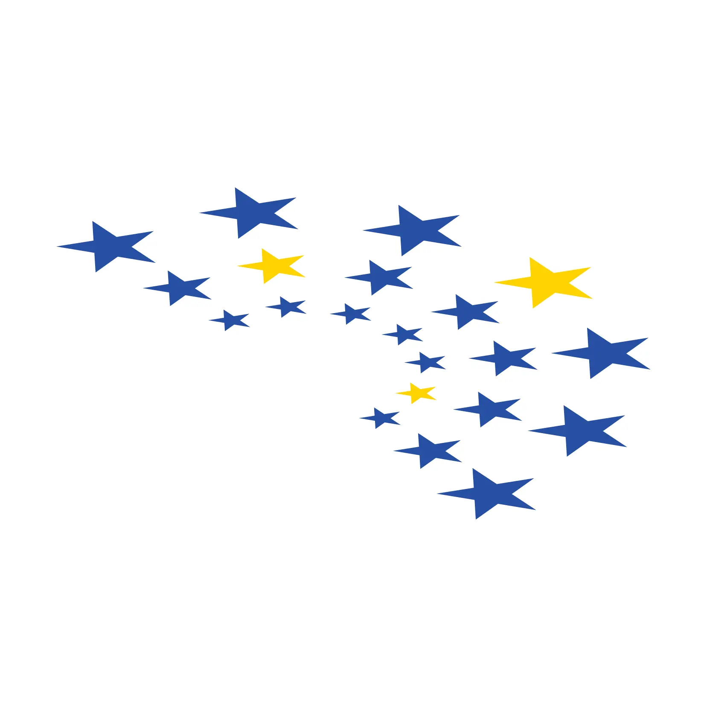
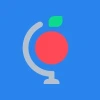

Grade: 19.7/20
Attending the Economics and Computer Science curriculum.
During my time here, I've deepened my interest in programming,
contributed to nonprofit organizations, and engaged in national and international activities.
Led independent computer science club, member of school organized debate club,
economics club, and election supervisory committees.

Co-founded Simplified Coding, a Greek non-profit launched in September 2022 with the mission to make programming accessible and enjoyable through free, ad-free resources. I lead course development, oversee data protection compliance, and manage the project's financial and legal sustainability to ensure continuous growth and quality education.

Active member of the European Youth Parliament, representing Greece as delegate to the Committees on Employment and Social Affairs (46th National Conference, Greece), Artificial Intelligence in a Digital Age (24th National Conference, Netherlands), and Civil Liberties, Justice, and Home Affairs (8th International Forum, Greece). Served on the organizing teams of the 48th and 49th National Conferences in Greece, overseeing food and material management, and acted as Head of Material at the 49th Conference.

As a volunteer tutor at Schoolhouse, I supported 66 students from 24 countries over 38 hours and 50 sessions, helping them build confidence and deepen their understanding of Computer Science. My work received 128 positive ratings, reflecting the trust and appreciation of the learners I guided.